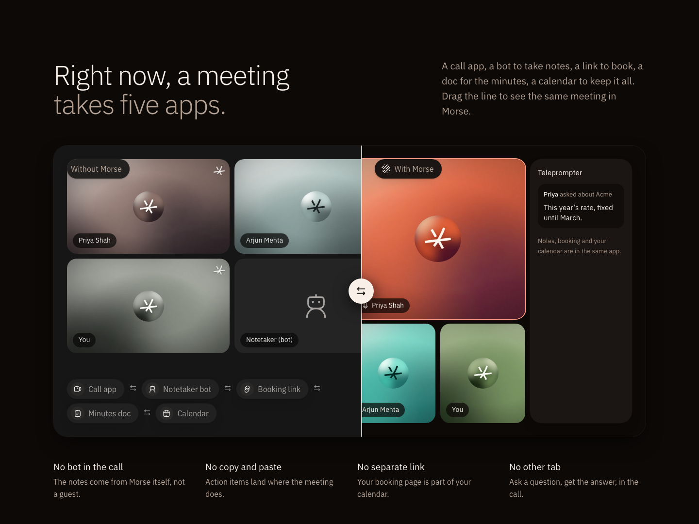
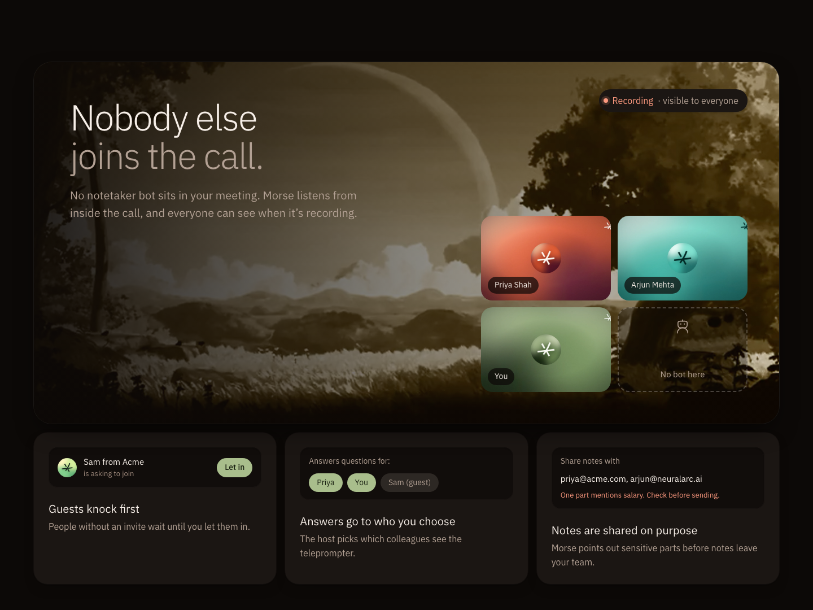
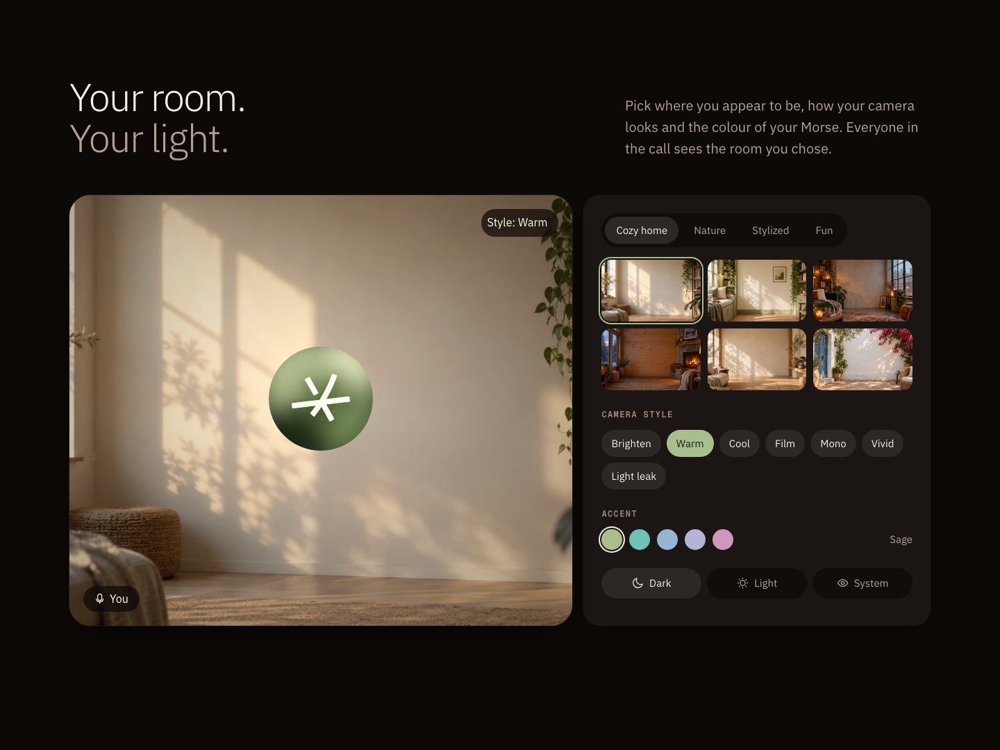
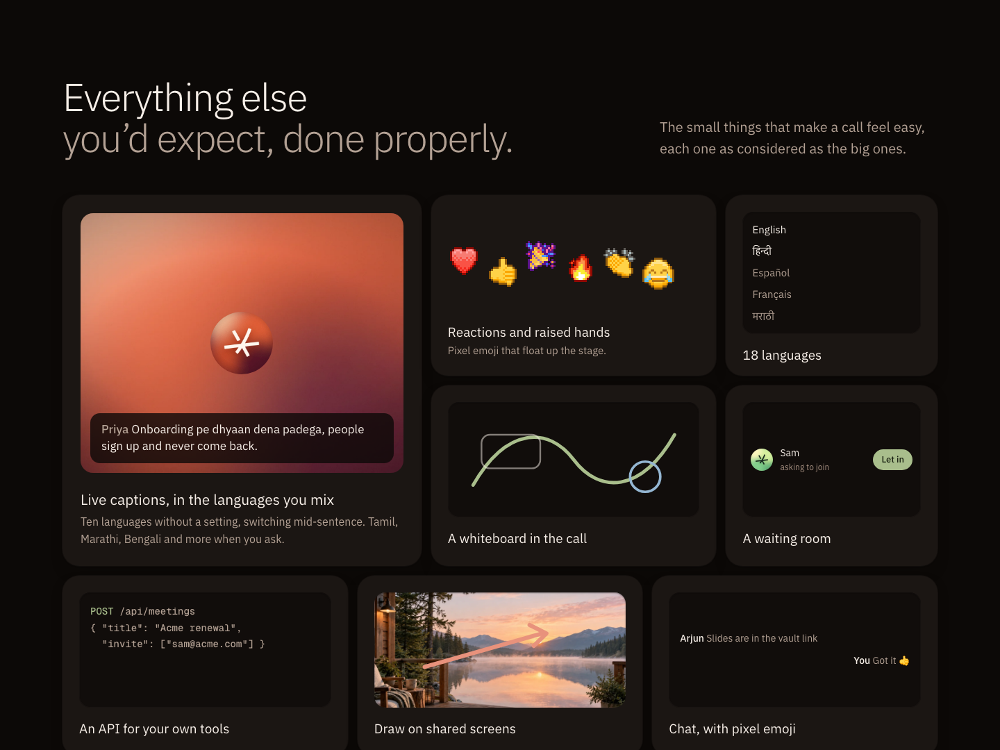

Section 3: after the product
Section 2 shows what Morse does. Each option answers the next question a visitor has.
A · Before and after: “Why switch?”
The same meeting, split by a handle you drag: five apps and a notetaker bot on one side, Morse on the other. Four “No …” lines underneath.

B · Nobody else joins the call: “Can I trust it?”
A film window with the call and an empty dashed seat where a bot would be, plus three trust details drawn from the product: guests knock, answers go to who you choose, sensitive notes are flagged.

C · Your room, your light: “Will it feel like mine?”
A live camera tile that changes as you pick a background, a camera style, an accent and light or dark, using the app’s real backgrounds.

D · Everything else, done properly: “Is anything missing?”
The in-call details: captions in the languages you mix, pixel reactions, 18 languages, whiteboard, waiting room, API, drawing on shared screens, chat.
